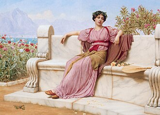

Exhibitions
The Secret History of KISS, Shooting Gallery, San Francisco, California, US, November 1–December 6, 2008.
The Secret History of Kiss, Shooting Gallery, San Francisco, California, US, November 1–December 6, 2008.
Notes
This work references John William Godward’s painting Tranquility.
This painting also references Ace Frehley of the band KISS in his signature makeup.
Arrested Motion’s preview coverage for The Secret History of KISS includes an image labeled for Lady in Waiting.
Ancillary Documentation


